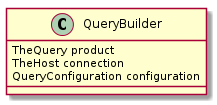

To accomodate the almost arbitrary ways to get device-state information from a DUT, a general Query class is created to let user’s specify commands to send and expressions to extract information from their output.
Main Path
Check if csv-output has been opened.
1.1. Open csv-output if not opened
1.2. Write header if output just opened
Traverse fields
2.1. Send field’s command to connection
2.2. traverse lines of output from connection
2.2.1. check if field’s expression matches line and add match to output-dictionary if it does
2.2.2. If no match, continue to next line
2.2. If no match made, add not-available token to output-dictionary
- Send output-dictionary to csv-output
The Call
The call builds a dictionary of data output from the Query’s commands. It always starts with a timestamp, then adds any ‘extra_data’ that was passed in to the call before calling each command. After calling each command once it writes the output as a row in the (csv) output-file.
class QueryEnum(object):
__slots__ = ()
section = 'query'
# special options
delimiter = 'delimiter'
not_available = 'not_available'
filename = 'filename'
timeout = 'timeout'
trap_errors = 'trap_errors'
# reserved names
reserved = (delimiter, not_available, filename, timeout,
trap_errors)
# defaults
default_delimiter = ','
default_not_available = 'NA'
default_filename = 'query.csv'
default_timeout = 10
default_trap_errors = True
The Query Builder
This is a first builder. The intent is that for each high-level component there will be a Class - Configuration - Builder troika. The configurations are already in place for most cases but the AutomatedRVR is this huge class, at least in part because it is acting as a builder of its parts as well as an executor of its test. As with the configurations it would be better to have an RVRBuilder (or some sensibly-named thing) and each part would have its own builder. This might not alway seem to be necessary, but in the case of things like TheCommand or TheQuery where they are expecting a connection to a remote device, it seems like there’d be too much redundant code to specify the connections every time. The Builder thus acts to defer the building of the components until the master-builder has built the connection. Each builder should know how to build its object, but defer to another builder if it needs something that is not unique to it.
- Configurations map config-files to parameters needed to build a component
- Builders map configurations and built-objects to built components
